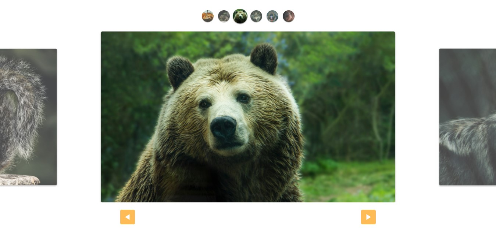
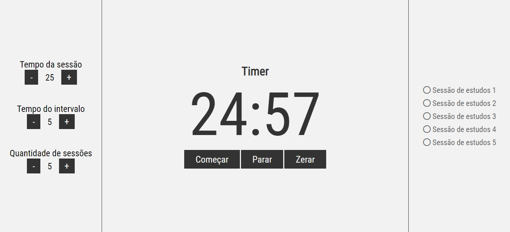
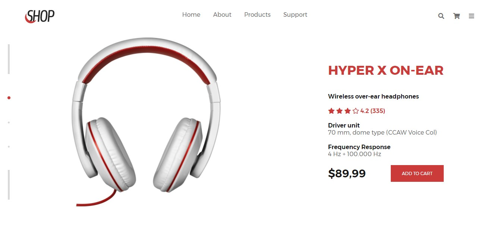

Olá, me chamo Rafael, sou estudante de Ánalise e Desenvolvimento de Sistemas na UNIP, e também aluno da Origamid
Logo abaixo estão disponíveis todos os meus projetos, clicando em "Repositório Github" você será redirecionado ao repositório do projeto, para análise do código, e clicando em "Github Pages", você será redirecionado para a página onde o projeto esta hospedado.
Projeto de um slider de imagens desenvolvido no curso de JavaScript da Origamid
Projeto de estudo desenvolvido com JavaScript, para auxiliar o usuário a organizar seu tempo, com base na técnica de Pomodoro
Desafio sugerido pelo site Dev challenge, para criação de uma landing page
